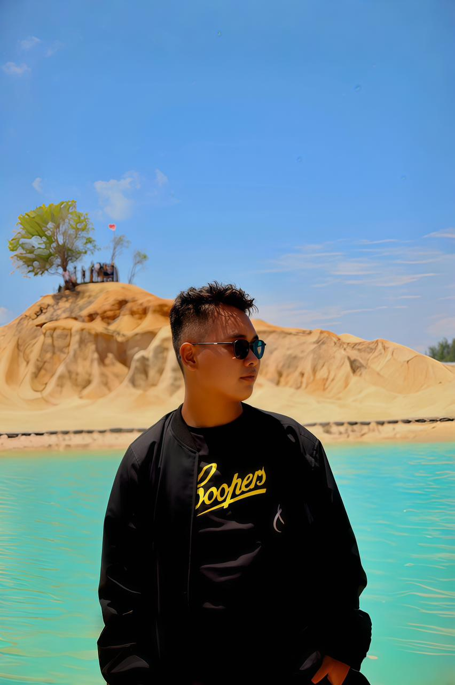
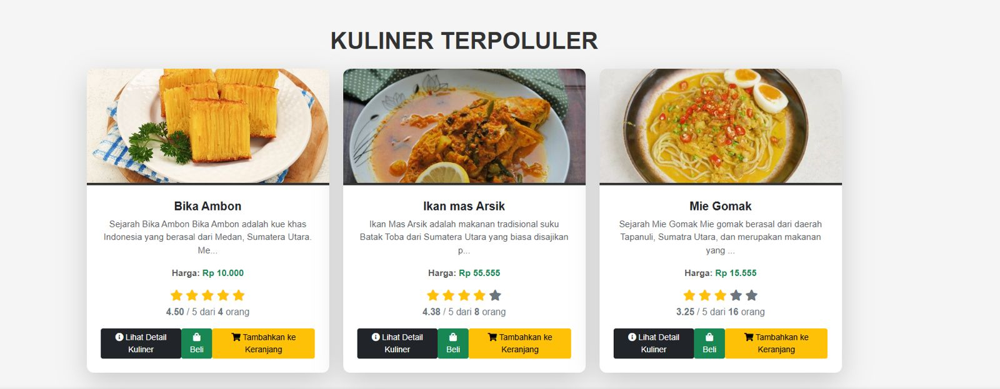

Open for collaboration
0
Project utama yang saya tampilkan sebagai representasi kemampuan saya.
0
Teknologi inti yang paling sering saya gunakan untuk belajar dan membangun project.
0
Pengalaman dipercaya memimpin project tim saat masa perkuliahan.
Membangun tampilan digital yang clean, modern, dan meyakinkan.
Saya fokus di
HTML yang rapi
CSS yang responsif
JavaScript yang interaktif
Halo, saya Fhrada Samuel Tambunan. Saya sedang mengembangkan kemampuan sebagai web developer dengan fokus pada interface yang rapi, pengalaman pengguna yang nyaman, dan implementasi project yang terus berkembang dari HTML, CSS, JavaScript, PHP, hingga Laravel dan kolaborasi mobile app.
UI yang rapi
Fokus pada layout yang nyaman dilihat dan mudah dipahami.

Fhrada Samuel Tambunan
Web Developer in Progress
Based in Indonesia
Frontend + Backend
Belajar membangun produk dari visual sampai logika aplikasi.
Tentang saya
Perjalanan belajar yang terus saya bentuk jadi karya nyata.
Saya senang mengubah proses belajar menjadi project yang bisa ditunjukkan dengan jelas, mulai dari website statis, pengembangan Laravel, sampai kolaborasi aplikasi mobile.
Saya adalah programmer pemula yang terus berkembang lewat project kampus dan eksplorasi mandiri. Di semester awal, saya dipercaya menjadi ketua tim dan memimpin pembuatan website kuliner khas Medan menggunakan HTML, CSS, JavaScript, dan PHP.
Perjalanan itu berlanjut di semester berikutnya saat project tersebut dikembangkan lagi menjadi website rekomendasi kuliner khas Medan berbasis Laravel. Dari sana saya belajar bagaimana menyusun alur aplikasi dengan struktur yang lebih rapi dan lebih siap dipakai.
Saya juga terlibat dalam project mobile WorkRadar, khususnya pada fitur cuaca dan lokasi dengan memanfaatkan Open-Meteo API dan Geolocator. Selain project utama, saya juga pernah membuat kalkulator sederhana dan undangan pernikahan digital sebagai latihan memperkuat dasar pengembangan aplikasi.
Kepemimpinan
Terbiasa mengatur alur kerja tim pada project semester 1 dan 2.
Growth mindset
Terus belajar dari project kecil sampai implementasi yang lebih kompleks.
Problem solving
Menikmati proses mencari solusi dari tampilan sampai integrasi API.
Kolaboratif
Nyaman bekerja sebagai ketua tim maupun anggota sesuai kebutuhan project.
Core skill
Teknologi yang paling sering saya gunakan untuk berkembang.
Saya fokus menguatkan fondasi yang relevan untuk membangun interface modern, logika aplikasi, dan project yang lebih siap dikembangkan ke level berikutnya.
HT
Strong base
HTML
Menyusun struktur halaman yang rapi, semantik, dan siap dikembangkan jadi landing page yang profesional.
CS
UI styling
CSS
Mengubah tampilan sederhana menjadi layout yang lebih estetik, responsif, dan modern dengan detail visual yang lebih matang.
JS
Interaction
JavaScript
Menambahkan interaksi seperti animasi ringan, navigasi dinamis, typing effect, dan perilaku halaman yang lebih hidup.
PH
Server logic
PHP
Mempelajari dasar backend untuk membangun website yang tidak hanya menarik secara visual tetapi juga fungsional.
LV
Framework
Laravel
Mengembangkan project kampus ke struktur aplikasi yang lebih terorganisir dengan workflow yang lebih kuat.
AP
Exploration
API Integration
Mulai terbiasa menghubungkan aplikasi dengan data eksternal seperti informasi cuaca dan lokasi pengguna.
Selected work
Beberapa project yang paling mewakili proses belajar saya.
Setiap project di bawah ini menunjukkan peningkatan cara saya membangun tampilan, struktur aplikasi, dan kolaborasi saat mengerjakan solusi digital.

Project kampus
Website Kuliner Khas Medan
Project web yang menjadi fondasi perjalanan saya dalam membangun tampilan informatif dan pengalaman pengguna yang lebih terarah.
Lihat detail project
Pengembangan lanjutan
Rekomendasi Kuliner Khas Medan
Pengembangan dari project sebelumnya dengan pendekatan yang lebih matang menggunakan Laravel untuk alur aplikasi yang lebih rapi.
Lihat detail project
Kolaborasi mobile
WorkRadar
Project aplikasi mobile dengan fokus kontribusi pada fitur cuaca dan lokasi agar pengguna dapat melihat kondisi sekitar secara praktis.
Lihat detail project
Kontak
Siap untuk diskusi project, kolaborasi, atau peluang baru.
Jika kamu tertarik dengan gaya kerja saya atau ingin ngobrol soal ide project, saya terbuka untuk terhubung dan berdiskusi lebih lanjut.
Portofolio yang baik bukan hanya terlihat bagus, tapi juga terasa siap dipercaya.
Saya senang membangun tampilan yang bersih, mudah dipahami, dan punya karakter visual yang modern. Jika kamu ingin bekerja sama atau sekadar memberikan masukan, saya akan senang mendengarnya.
Terbuka untuk kolaborasi project pembelajaran dan freelance.
Siap mengembangkan landing page, website kampus, dan UI modern.
Mudah diajak diskusi, revisi, dan eksplorasi ide baru.